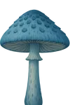

✨
Arzanskân
100%
Ta jauge est vide… ⚡
Pour poursuivre ta visite d’Arzankia, récolte un ingrédient magique !
Monde de la Forêt enchantée

« Un monde où les arbres murmurent des secrets anciens et où chaque pas fait naître une étincelle de lumière. »
Extrait du livre
← Retour